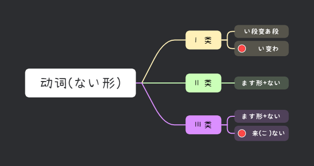

📖 みんなの日本語 第十七課
ない形・禁止・義務｜ないでください・なければなりません・なくてもいいです
文法 ①
动词ない形
动词ない形的变化规则（从ます形变化）：
| 动词类型 | ます形 → ない形 变化规则 | 例子 |
|---|---|---|
| Ⅰ类 | ます去掉 + ない（注意音便） | 書きます→書かない・読みます→読まない・話します→話さない |
| Ⅱ类 | ます去掉 + ない | 食べます→食べない・見ます→見ない |
| Ⅲ类 | きます→こない・します→しない | 来ます→来(こ)ない・勉強します→勉強しない |

💡 详见学习辅导用书的动词ない形表。
文法 ②
动词ない形 + ないでください
Vないでください
意义：请求/命令对方不要做某事。
ここで写真を撮らないでください。→ 请不要在这里照相。
文法 ③
动词ない形 + なければなりません
Vなければなりません
意义：表示必须要做某事（义务）。
薬を飲まなければなりません。→ 必须吃药（日本人说“喝药”）。
💡 注意：日语中「薬を飲む」（喝药），不说「食べる」。
文法 ④
动词ない形 + なくてもいいです
Vなくてもいいです
意义：表示不做某事也没关系，不必要做某事。
明日来なくてもいいです。→ 明天不来也没关系。
文法 ⑤
宾语主题化（を → は）
を → は
意义：当宾语用于主题时，去掉「を」，加上「は」。
ここに荷物を置かないでください。→ 请不要把行李放在这里。
荷物はここに置かないでください。→ 行李请不要放在这里。
文法 ⑥
名词(时间) + までに / まで + 动词
時間 + までに / まで + V
意义：「までに」表示动作/事情的期限（瞬间性）；「まで」表示持续到某个时间。
会議は5時までに終わります。→ 会议在5点之前结束。
5時まで働きます。→ 工作到5点。
💡 瞬间完成的动作用「までに」，持续完成的动作用「まで」。
📌 第十七課 キーワード
ないでくださいなければなりません
なくてもいいですまでにまで
📖 语法核心：ない形・禁止・义务・不必要・宾语主题化・までに/まで